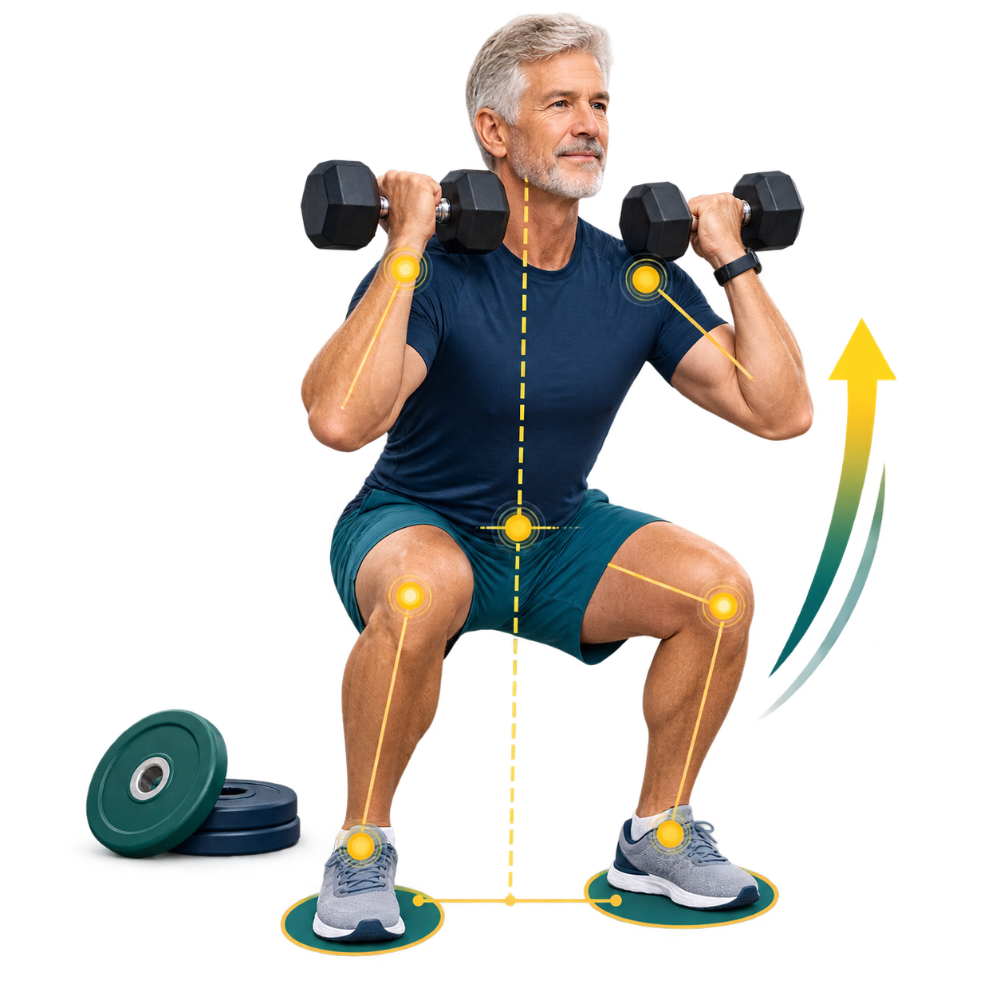

Sztanga
Gryf + wszystkie talerze.
20 kg + 2 × 10 kg = 40 kg.
Wpisz ciężar i liczbę powtórzeń z krótkiej serii. Kalkulator oszacuje wynik dla jednego powtórzenia i odniesie go do Twojej masy ciała.

Zawsze podawaj łączny ciężar poruszany w ćwiczeniu. Przy kolejnych zapisach licz go dokładnie w ten sam sposób.
Gryf + wszystkie talerze.
20 kg + 2 × 10 kg = 40 kg.
Dodaj oba hantle.
2 × 12 kg = 24 kg.
Wartość ustawiona na stosie.
Porównuj tylko tę samą maszynę.
e1RM to szacowany ciężar dla jednego powtórzenia. Siła względna porównuje go z masą ciała.
Wykres pokazuje wybrane ćwiczenie. Tabela zachowuje wszystkie zapisane serie.
Wykres pojawi się po zapisaniu pierwszego wyniku dla wybranego ćwiczenia.
Nie zapisano jeszcze żadnej serii. Historia pozostaje wyłącznie w tej przeglądarce.
| Data | Ćwiczenie | Seria | e1RM | Zmiana |
|---|
Kalkulator używa wzoru Epleya: ciężar × (1 + liczba powtórzeń ÷ 30). Ten sam wzór stosowany przy kolejnych treningach pomaga obserwować kierunek zmiany.
Badania nad wyciskaniem i suwnicą wykazały, że krótsze serie lepiej przewidują 1RM, a liniowych równań nie powinno się opierać na więcej niż 10 powtórzeniach. W badaniach osób starszych różnice między szacunkiem a rzeczywistym 1RM dochodziły jednak do około 20%.
Nie porównuj wyników różnych ćwiczeń, maszyn ani technik. Wynik `1,00 × masa ciała` w jednym ruchu nie znaczy tego samego w innym.
Badanie dokładności dla 5, 10 i 20 powtórzeń →Równania dla trenujących osób starszych →Trening siłowy osób starszych według ACSM →Użyj serii, którą i tak bezpiecznie wykonujesz w planie. Kalkulator nie ocenia techniki, bólu, przeciwwskazań ani gotowości do podnoszenia większego ciężaru.